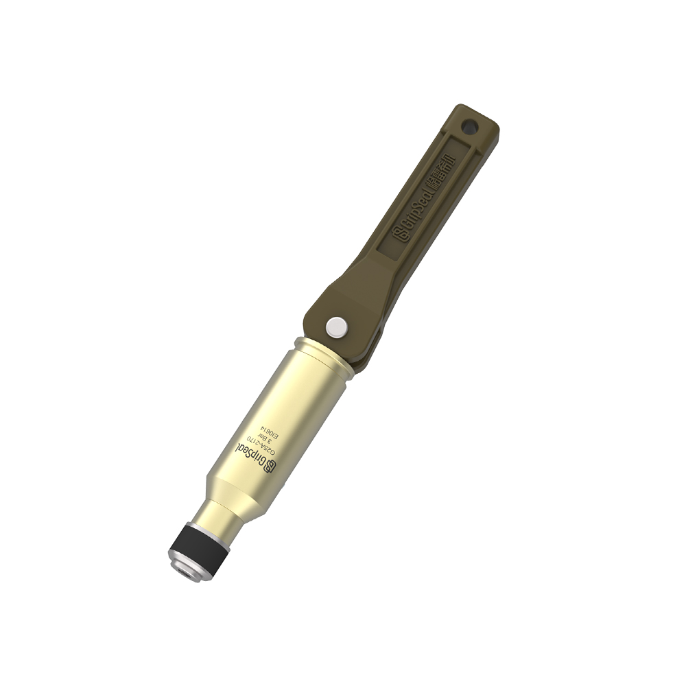
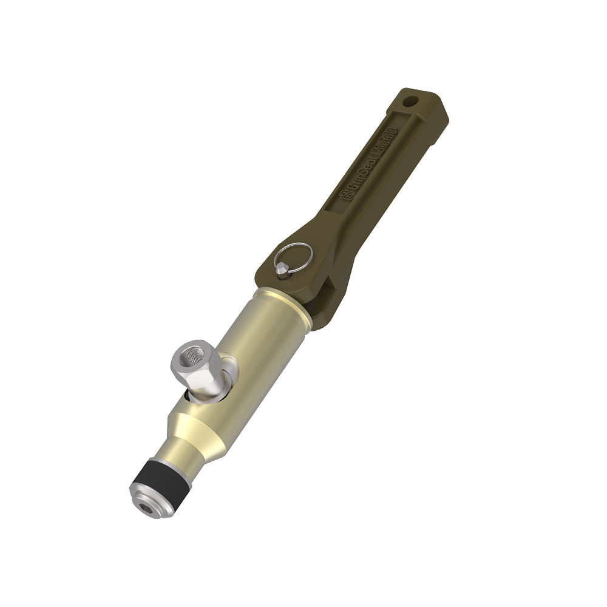
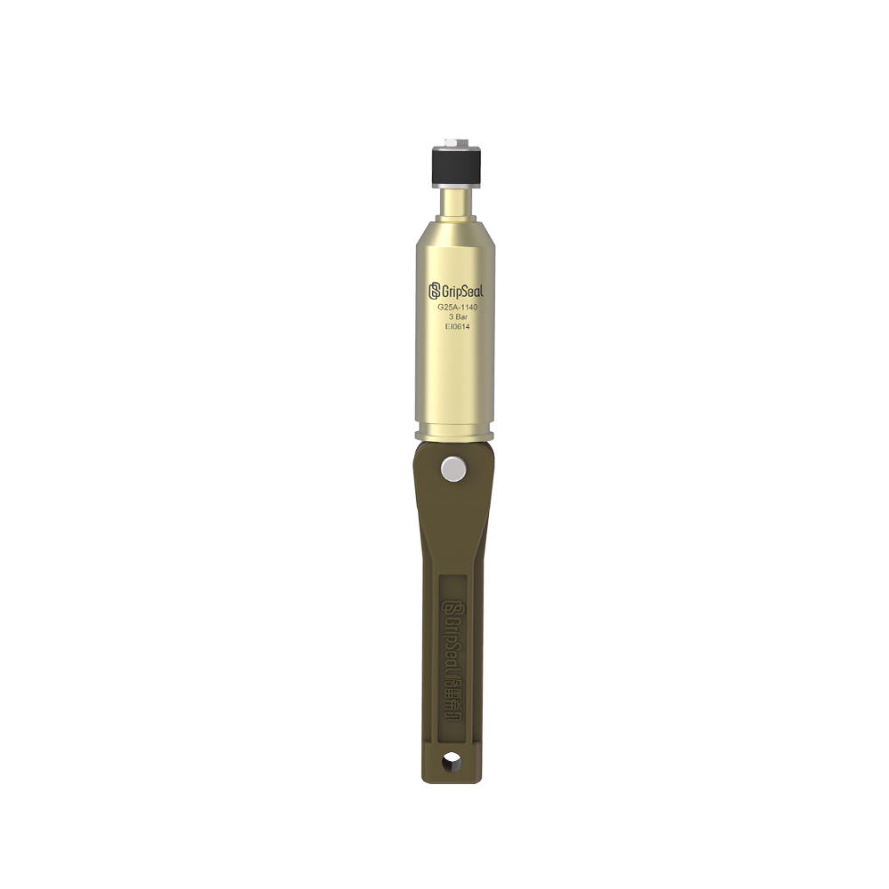
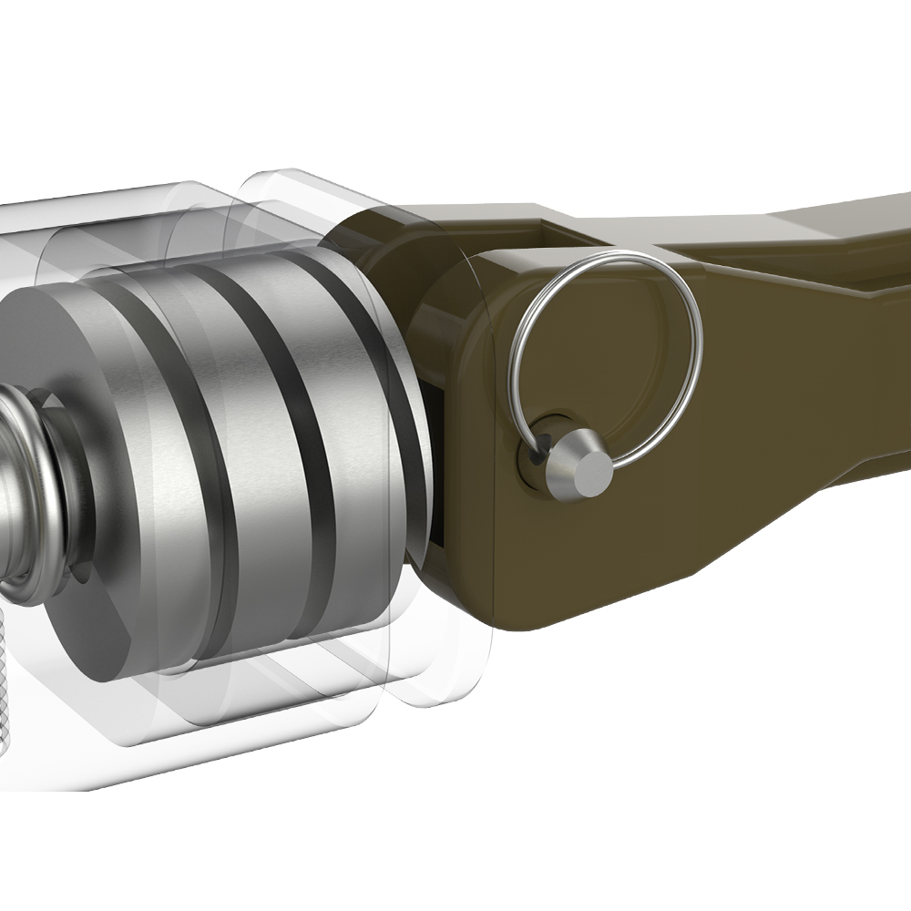

推荐 产品
Related 系列 to Compare
Compare nearby series in the same category before choosing the final model route。
液冷快速接头 for larger coolant paths, serviceable thermal systems, and repeated maintenance connections。



This model page follows a catalog-style structure for product details, model comparison, application notes, and engineering selection review。
适用于需要快速连接、重复密封和稳定测试或维护节拍的工业工位。
产品参数
| 系列 | 液冷 |
|---|---|
| 连接路线 | 冷却液回路维护连接 |
| 典型压力 | 0 - 2 MPa |
| 介质 | 水乙二醇 / 处理水 / 绝缘冷却液 |
| 操作方式 | 手动连接 / 断开 |
| 主体材质 | 铝合金 / 不锈钢 / 黄铜，按应用确认 |
| 密封材质 | NBR / FKM / EPDM by media |

适用于重视节拍和操作一致性的重复工业连接。
具体型号取决于接口结构、压力、介质和可用操作空间。
可根据项目评估手动操作、气动驱动或自动化工装集成。
Exact dimensions, model codes, and drawings are confirmed according to the interface and project requirements。
选型表
| 型号 | Interface 量程 | 压力 | 介质 | 操作方式 | 备注 |
|---|---|---|---|---|---|
| G25A-01 | 按图纸确认 | 0 - 2 MPa | 水乙二醇 / 处理水 / 绝缘冷却液 | 手动连接 / 断开 | Confirm by interface drawing and project requirements |
| G25A-02 | 按图纸确认 | 0 - 2 MPa | 水乙二醇 / 处理水 / 绝缘冷却液 | 按项目确认 | Confirm by interface drawing and project requirements |
该系列可用于工业测试、线边连接、维护接口或充注工位的评估。
适用于压力、流量和检漏台架上的重复连接点。
适合需要快速操作的维护或调试连接。
当手动操作需要转向产线集成时，可评估适合工装的路线。
Interface-specific notes and project photos can be reviewed during selection。
Compare nearby series in the same category before choosing the final model route。